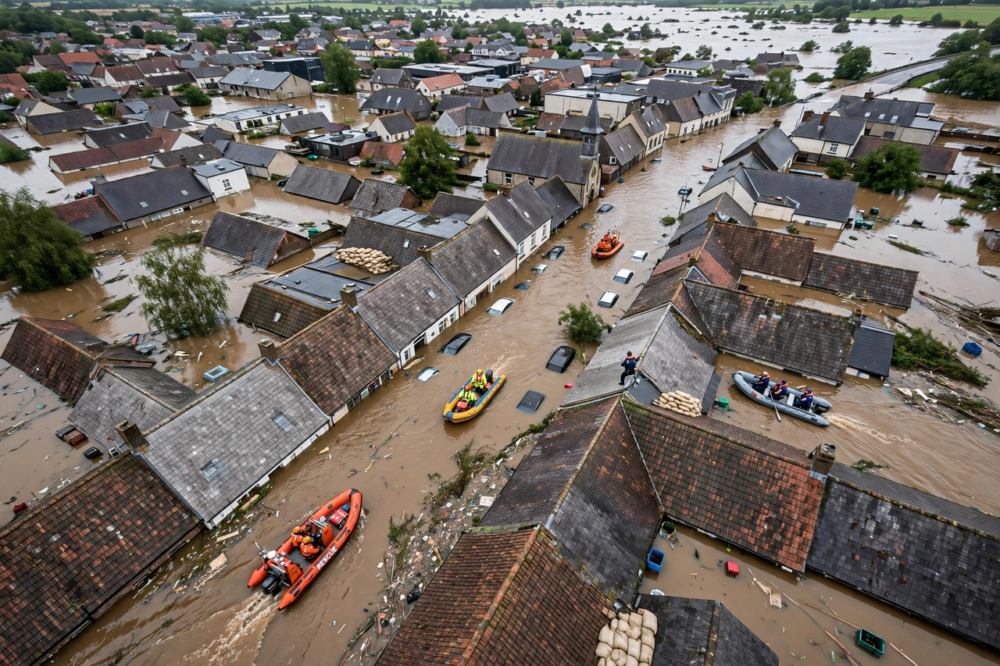

Natural disaster

A natural disaster is the harmful impact on a society or community of a natural hazard — an earthquake, flood, storm, eruption, wildfire or drought — whose effects overwhelm local capacity to cope. Disaster studies emphasise that hazards are natural, but disasters are not: the same earthquake can pass almost unnoticed in one country and kill hundreds of thousands in another.
Global disaster databases record thousands of events; weather-related disasters have increased in frequency over recent decades, a trend linked in part to {L('Climate_change')} and to growing exposure of people and assets in hazardous places.
Types
Geophysical hazards include earthquakes, tsunamis, volcanic eruptions and landslides; hydrological hazards include floods and avalanches; meteorological hazards include tropical cyclones, tornadoes, heatwaves and blizzards; climatological hazards include droughts and wildfires; and biological hazards include epidemics and locust plagues. Space hazards, such as asteroid impacts and solar storms, are rare but not negligible.
The deadliest disasters in recorded history include the 1931 China floods, the 1976 Tangshan earthquake, the 2004 Indian Ocean tsunami, and the great historical famines triggered by drought and crop failure.
Risk and reduction
Disaster risk is usually expressed as a product of hazard, exposure and vulnerability, reduced by capacity. Building codes, land-use planning, early-warning systems, levees and shelters, ecosystem protection (mangroves, wetlands, forests), insurance and social safety nets all reduce losses — generally far more cheaply than recovery.
The international Sendai Framework for Disaster Risk Reduction (2015–2030) sets global targets for cutting mortality and economic losses. Vulnerability is social as much as physical: poverty, weak governance, corruption and marginalisation decide who lives in dangerous places and who can recover.
See also: Earthquake · Flood · Drought · Wildfire · Landslide · Seismology · Climate change